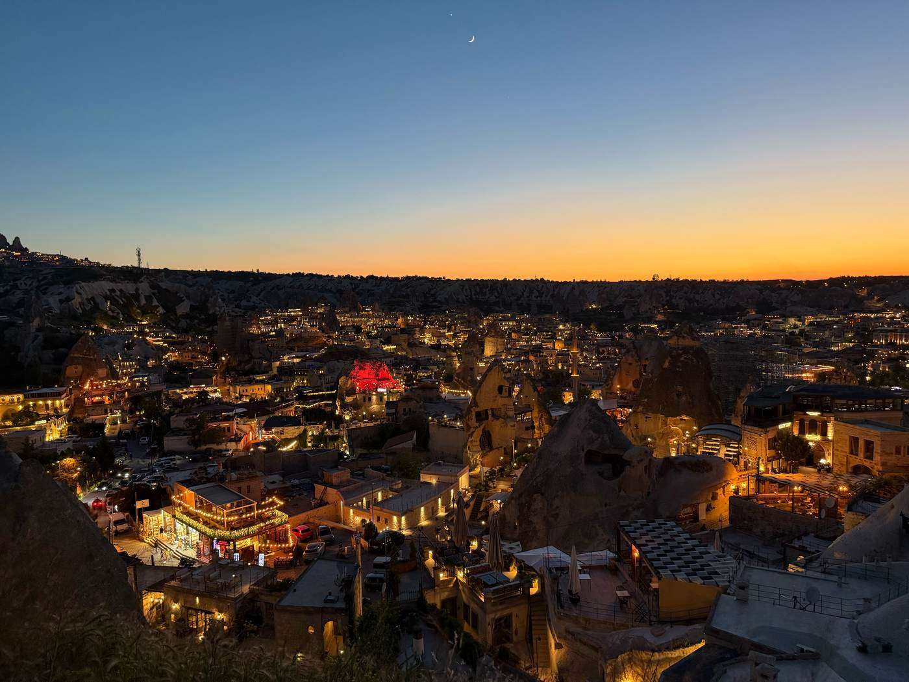
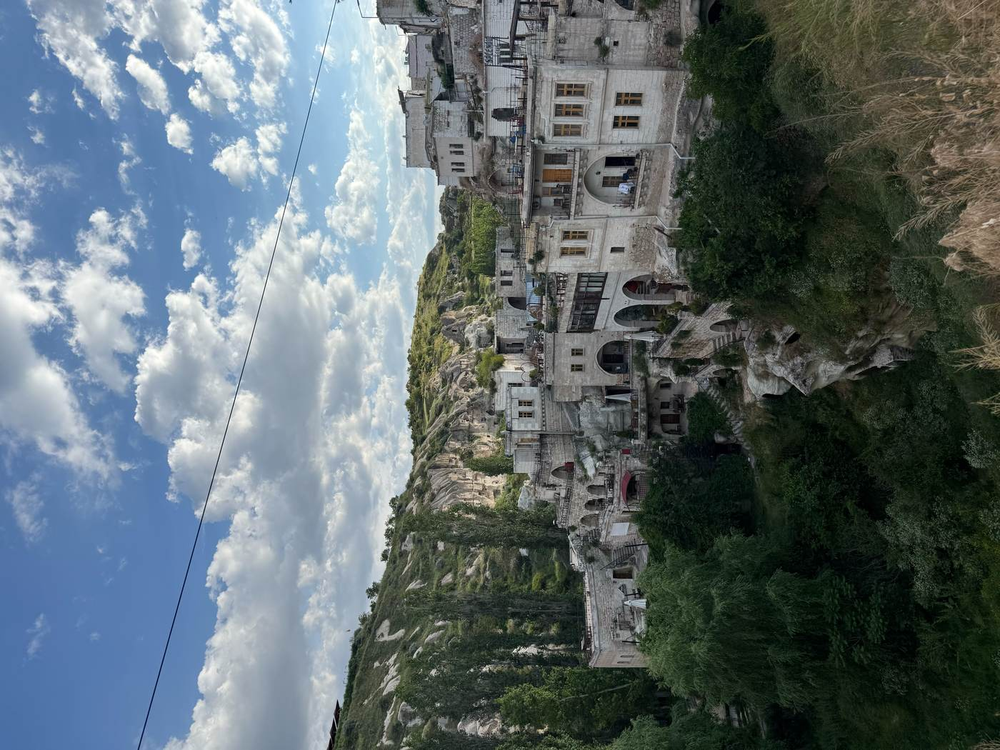
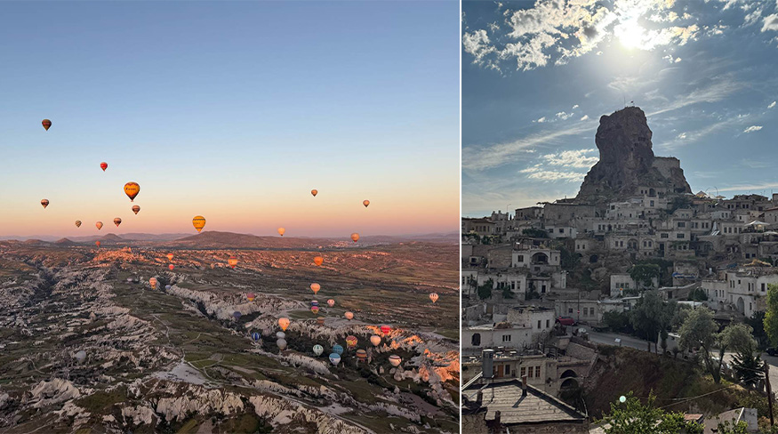
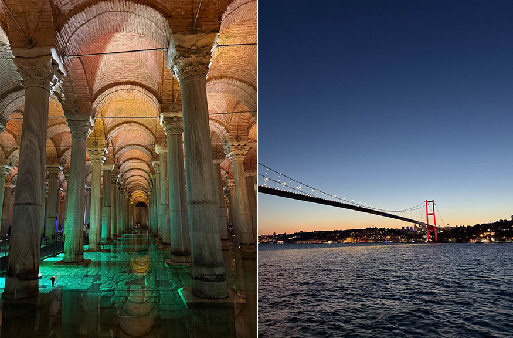
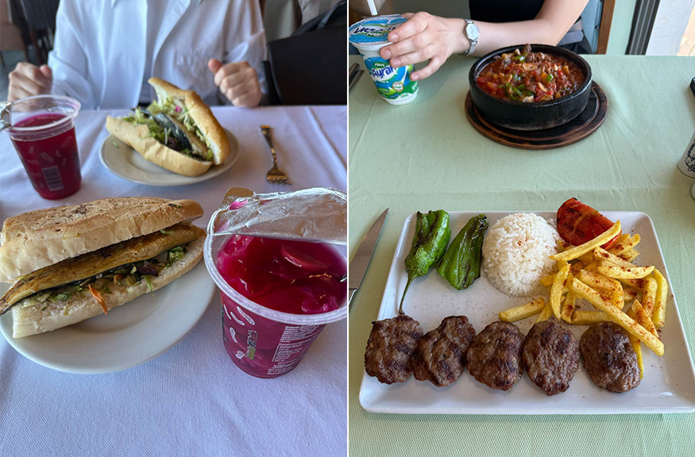
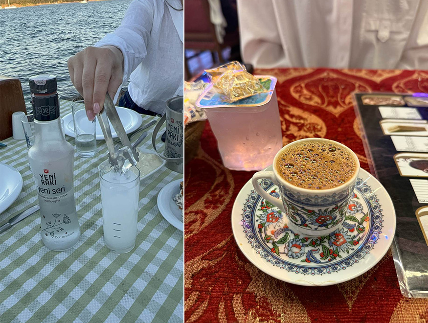

一直很好奇，當東西方文明在同一座城市交會，會是什麼模樣。於是，這次安排了七天的土耳其之旅：前三天去卡帕多奇亞看熱氣球，後四天則留在伊斯坦堡，走訪老城與博斯普魯斯海峽。
落地伊斯坦堡機場後轉搭境內班機到卡帕多奇亞，一出機場就能感受到完全不同的地景，不是台灣常見的那種山或海，而是一整片被風和水蝕刻出來的奇岩怪石。
 |
| 格雷梅小鎮華燈初上，一彎新月掛在天邊。 |
我們選擇住在格雷梅（Göreme），這裡被公認是卡帕多奇亞最方便的落腳點，餐廳、商店和接送都很成熟。入住的是一間洞穴改建的青年旅館，房間本身就鑿在岩壁裡，牆面摸起來涼涼的，很特別。櫃檯的老闆非常熱情，不但主動分享了很多當地人才知道的小撇步，還幫忙聯繫比較實惠的熱氣球公司，連室友之間的氣氛都很融洽，唯一比較可惜的是沒有冷氣，夏天晚上會稍微悶熱。
入住當天傍晚，我們爬上附近的日落觀景點，眼看著整座格雷梅小鎮一點一點亮起燈火，洞穴旅館的燈光從岩壁的縫隙裡透出來，天色從橘紅轉成深藍，一彎新月掛在空中，那個畫面到現在都還記得很清楚。
 |
| 格雷梅山谷裡的洞穴旅宿與房舍。 |
卡帕多奇亞真正的重頭戲是熱氣球。清晨四點多就被接駁車載到集合點，天還沒亮，現場已經擠滿了來自世界各地的遊客。熱氣球升空之後，整個空間瞬間安靜下來，數十顆色彩鮮豔的熱氣球在晨光裡慢慢升起，底下是連綿起伏、佈滿精靈煙囪的奇岩地形，隨著太陽升起，光線一層一層灑在岩石和葡萄園上，那種壯闊很難用照片完整呈現，機長還貼心準備了香檳慶祝這趟飛行平安落地。
降落後，我們回到旅館補眠，下午去了帕夏貝山谷（Paşabağı Vadisi），這裡是卡帕多奇亞最有名的精靈煙囪群，一根根尖頂岩柱矗立在乾燥的谷地裡，像極了童話場景；接著又繞去瑟爾維露天博物館（Zelve Open Air Museum），看看早期居民鑿洞而居的生活痕跡。傍晚再趕到烏奇薩城堡（Uçhisar Castle），這座由整塊巨岩鑿成的天然堡壘是卡帕多奇亞的制高點，站上去可以俯瞰整個山谷，逆光把城堡的輪廓襯得特別有氣勢，也成為這趟旅程裡最喜歡的一張照片。
 |
| 清晨搭乘熱氣球俯瞰卡帕多奇亞奇岩地形。 烏奇薩城堡（Uçhisar Castle），卡帕多奇亞的制高點。 |
離開卡帕多奇亞後飛到伊斯坦堡，住在亞洲區的卡德科伊（Kadıköy）一帶。
頭兩天安排走老城區的經典路線，香料市場、大巴扎裡人聲鼎沸，講價聲此起彼落；托普卡匹皇宮的後宮與寶物展間走起來意外地花時間，建議預留一整個上午；藍色清真寺外觀比想像中壯觀，可惜聖索菲亞大教堂當時正在整修，只開放看幾幅壁畫，有點可惜。
伊斯坦堡最讓我驚艷的景點則是地下的巴西利卡地下水宮（Basilica Cistern），一走進去就像進了另一個時空，上百根古羅馬石柱整齊排列在幽暗的燈光裡，地面的水池打上藍綠色的燈光，踩著步道往深處走，安靜到只聽得見水滴聲，很難想像這其實是一千多年前拜占庭時期的地下蓄水池。另一天傍晚搭船遊博斯普魯斯海峽，夕陽西下時船行經過其中一座跨海大橋，橋身的燈光一盞一盞亮起，兩岸的清真寺與豪宅剪影在暮色裡若隱若現，才真正體會到為什麼這裡被稱為東西方文明的交界。中途還搭船跳島去了王子群島，島上禁行汽車，租台單車繞島吹風，步調突然慢了下來。
 |
| 巴西利卡地下水宮（Basilica Cistern）的石柱與水光。 搭船遊博斯普魯斯海峽，夕陽下的跨海大橋。 |
說到吃，土耳其的街頭美食完全不會讓人失望。伊斯坦堡碼頭邊一定要試試道地的烤魚三明治（Balık Ekmek），外酥內嫩的烤魚夾著生菜塞進法國麵包裡，配上一杯酸甜冰涼的紅石榴汁，是最道地的平民小吃。
餐廳吃到的科夫塔肉丸（köfte）配米飯、烤蔬菜和薯條，調味扎實，份量也相當大方，一份就能吃得很飽，旁邊再配一杯鹹鹹的優格飲（ayran），意外地很搭。
某天晚上在海邊的餐館，當地朋友教我們怎麼喝土耳其國民酒拉克酒（Rakı），加冰塊加水之後酒液會慢慢變成乳白色，當地人稱它為「獅子奶」，配著小菜一邊聊天一邊看海，很有度假的放鬆感。最後一天在卡德科伊的咖啡館喝了傳統土耳其咖啡，店家還順便幫忙看了咖啡渣占卜，雖然聽不太懂土耳其語的解釋，但那種把喝咖啡這件小事變成一種儀式的生活態度，讓人印象深刻。
 |
| 碼頭邊的烤魚三明治與紅石榴汁。 道地科夫塔肉丸套餐，配米飯、烤蔬菜與優格飲。 |
 |
| 海邊餐館裡的土耳其國民酒拉克酒（Rakı）。 卡德科伊咖啡館裡的土耳其咖啡與咖啡占卜。 |
另外有關飲食，魁北克充斥著義式/法式料理，我吃了不少像是義大利麵、淡菜、豬肋排、薄餅等美食，他們也流行吃鹿肉，但我沒有嘗試。有一餐吃了拉麵，在日式料理裡看到法文菜單跟混合日式法式的裝潢也是挺新奇的。
幾個實用小提醒：
● 土耳其境內機場很多，通常都會先經伊斯坦堡機場轉機。
● 當地貨幣是里拉，習慣用美金或歐元現場兌換，郵局的匯率普遍比較划算。
● 到伊斯坦堡市區記得先辦一張公車地鐵通用的 Istanbulkart，舊城區交通常常塞車，有卡搭地鐵或輪渡會輕鬆很多。
● 超市可以認明 Migros、CarrefourSA，或是更平價的 A101、BİM、ŞOK，幾乎每個街角都找得到。
七天的行程說長不長、說短不短，卡帕多奇亞教會我放慢腳步看風景，伊斯坦堡則讓我看到一座城市如何把千年歷史活成日常生活的一部分。如果你也喜歡壯闊的自然奇觀，又想感受熱鬧的市井生活，土耳其真的是一趟很值得安排的旅程。